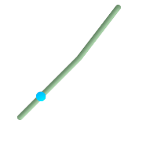

名前
ST_LineInterpolatePoint — 線に沿った内挿点を返します。第2引数はfloat8で0から1の区間で、そのポイントが位置するラインストリングの総延長についての割合です。
概要
geometry ST_LineInterpolatePoint(geometry a_linestring, float8 a_fraction);
説明
線に沿った内挿点を返します。第1引数は LINESTRINGでなければなりません。第2引数はfloat8で0から1の区間で、そのポイントが位置するラインストリングの総延長に対する割合です。
ポイントに最も近いライン位置の計算についてはST_LineLocatePointを参照して下さい。
![[注記]](images/note.png) | |
1.1.1から、この関数はM軸やZ軸の内挿点も (存在するなら)計算するようになりました。それより前の版では0.0となります。 |
Availability: 0.8.2 Z軸とM軸のサポートが1.1.1で追加されました。
Changed: 2.1.0 2.0.xまでではST_Line_Interpolate_Pointと呼んでいました。
 This function supports 3d and will not drop the z-index.
This function supports 3d and will not drop the z-index.
例

ラインストリングの20% (0.20)位置の内挿点
-- 2次元ラインに沿った20%ポイント
SELECT ST_AsEWKT(ST_LineInterpolatePoint(the_line, 0.20))
FROM (SELECT ST_GeomFromEWKT('LINESTRING(25 50, 100 125, 150 190)') as the_line) As foo;
st_asewkt
----------------
POINT(51.5974135047432 76.5974135047432)
-- 3次元線の中点
SELECT ST_AsEWKT(ST_LineInterpolatePoint(the_line, 0.5))
FROM (SELECT ST_GeomFromEWKT('LINESTRING(1 2 3, 4 5 6, 6 7 8)') as the_line) As foo;
st_asewkt
--------------------
POINT(3.5 4.5 5.5)
-- ポイントまたは他のジオメトリへの、ライン上の最短点の探索
SELECT ST_AsText(ST_LineInterpolatePoint(foo.the_line, ST_LineLocatePoint(foo.the_line, ST_GeomFromText('POINT(4 3)'))))
FROM (SELECT ST_GeomFromText('LINESTRING(1 2, 4 5, 6 7)') As the_line) As foo;
st_astext
----------------
POINT(3 4)